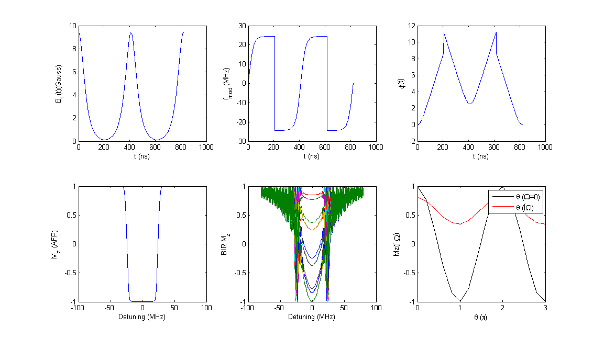

Contents
clear
clc
define simulation limits
Sys.M0=[0, 0, 1];
Exp.MaxDetuning=80e6;
Exp.npts=601;
spini=round(Exp.npts/2);
make AFP pulse
pulse.name='HSn';
pulse.method='Fixed_opBW';
pulse.regime='Adiabatic';
pulse.theta=pi;
pulse.opBW=50e6;
pulse.R=20;
pulse= Create_Optimized_Pulse(pulse);
[Sys, Exp, Mx1, My1, Mz1 ] = EvolveM_Fast(pulse, Sys, Exp);
Loop over BIR phases
thetas=[0:0.2:3].*pi;
cc=hsv(length(thetas));
h=waitbar(0, 'thinking');
for jj=1:length(thetas)
p=pulse;
p.BIRphase=thetas(jj);
[BIR] = Concatenate_BIR4(p);
[Sys, Exp, Mx, My, Mz ] = EvolveM_Fast(BIR, Sys, Exp);
Mztot(:,jj)=Mz;
MZ(jj)=Mz(spini);
int(jj)=sum(Mz)/Exp.npts;
waitbar(jj/length(thetas))
end
close(h)
plot
figure('color', 'white', 'units', 'norm', 'pos', [.1, .1, .6, .6])
subplot(2,3,1)
plot(BIR.t/1e-9, BIR.env/1e-4)
xlabel('t (ns)')
ylabel('B_1(t)(Gauss)')
subplot(2,3,2)
plot(BIR.t/1e-9, BIR.f_mod/1e6)
xlabel('t (ns)')
ylabel('f_{mod} (MHz)')
subplot(2,3,3)
plot(BIR.t/1e-9, BIR.phi/pi)
xlabel('t (ns)')
ylabel('\phi(t)')
subplot(2,3,4)
plot(Exp.detuning/1e6, Mz1)
xlabel('Detuning (MHz)')
ylabel('M_z (AFP)')
subplot(2,3,5)
plot(Exp.detuning/1e6, Mztot)
xlabel('Detuning (MHz)')
ylabel('BIR M_z')
subplot(2,3,6)
plot(thetas/pi, MZ, 'k')
ylabel('Mz(\Omega=0)')
hold on
plot(thetas/pi, int, 'r')
ylabel('Mz(\int \Omega)')
legend('\theta (\Omega=0)','\theta (\int\Omega)')
xlabel('\theta (\pi)')
